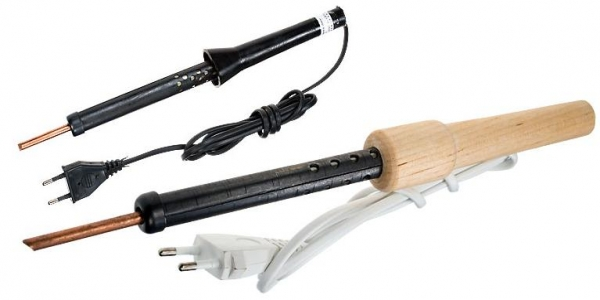
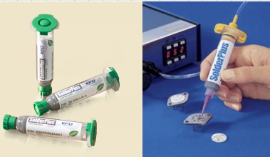

Умение паять - это главный навык электронщика. Освоить этот несложный навык довольно просто. Как и в любом деле важна практика. Прежде всего, необходимо обзавестись минимальным набором инструментов и материалов. Перечислим этот нехитрый "наборчик"
Паяльник - это электрический прибор, состоящий из нагревательного элемента, стержня, изоляционной ручки, электрического шнура и сетевой вилки. Дешёвые паяльники как раз и состоят из этих частей. Под действием электрического тока нагревательный элемент разогревается и тепло передаётся стержню (жалу). Стержень, как правило делают из меди. Температура жала паяльника держится в районе 180-3000c
Существуют, конечно, и более сложные паяльники, их называют паяльными станциями. Функционал таких станций довольно богат, но и стоят они довольно дорого. Цена обычного паяльника колеблется в районе 200 рублей (розница).
Припой - легкоплавкий сплав, которым производят пайку. Основным припоем при радиомонтаже является сплав свинца и олова. Можно конечно использовать и чистое олово, но оно дорогое, поэтому применяют оловянно-свинцовые сплавы. По прочности пайки оловянно свинцовые припои не уступают чистому олову. Наиболее распространены припои ПОС-61 и ПОС-40. Цифры 61 и 40 обозначают процентное содержание олова в сплаве. ПОС-61 содержит 61% олова, в ПОС-40, соответственно 40%. Чем больше в припое свинца, тем он темнее. Естественно, кроме стандартных припоев есть и улучшенные, обладающие тем или иным свойством (легкоплавкостью, прочностью, стойкостью к агрессивным средам).(Больше о припое)
Флюсы - вещества, облегчающие пайку и предотвращающие окисление спаиваемых поверхностей.
Если не применять флюс, то припой не будет ровно покрывать спаиваемые поверхности проводников. Флюсы нейтрализуют плёнку окисла на поверхности металла. Самым распространённым флюсом является канифоль. Канифоль это очищенная смола.
В качестве флюса можно использовать даже обычную сосновую смолу, которую можно найти в любом сосновом лесу. Правда, при пайке таким флюсом жало паяльника быстро покроется окалиной, что будет затруднять пайку.
Кроме того, неочищенная смола выделяет едкий сосновый запах. Обычно используется кусковая канифоль.
Выглядит она как янтарь прозрачная, с желтоватым оттенком. Применяются также растворы канифоли. Для пайки алюминия, нержавеющих сталей, никеля используют раствор канифоли и кислоты. Поверхность после пайки таким флюсом лучше промыть или стереть остатки флюса тканью. Если этого не сделать, то паяная поверхность, со временем покроется окислом, что не есть хорошо. Чтобы избежать такого эффекта, можно использовать нейтральный флюс на основе спирта. Для пайки окисленных деталей из чёрных и цветных металлов также подходит паяльный жир. В отличие от растворов он густой.
В конце без того длинного повествования хотелось бы немного рассказать о паяльной пасте. Используется она в основном для пайки поверхностно монтируемых компонентов (SMD-шек) и безвыводных микросхем в корпусах BGA.
На вид представляет собой серого цвета кашицу и состоит из о-о-очень мелких шариков припоя Sn62Pb36Ag2 (состав: 62% олова, 36% свинца и 2% серебра), а также безотмывочного флюса.
На упаковке указывается, что флюс безотмывочный двумя буквами в названии – NC (No Clean – без очистки). Флюс, в котором содержаться шарики припоя на воздухе высыхает, поэтому пасту хранят в закрытой упаковке.

Применяется паяльная паста при сложном ремонте мобильных телефонов для пайки микросхем в корпусе BGA. Для её использования требуется дополнительное оборудование ,например, специальные трафареты. Стоимость такой пасты довольно высока. Да и не удивительно, ведь в её составе есть серебро.